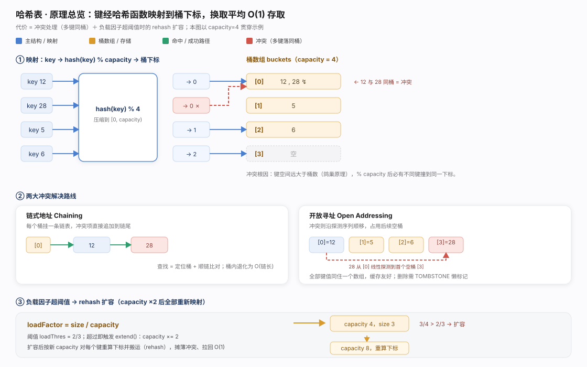
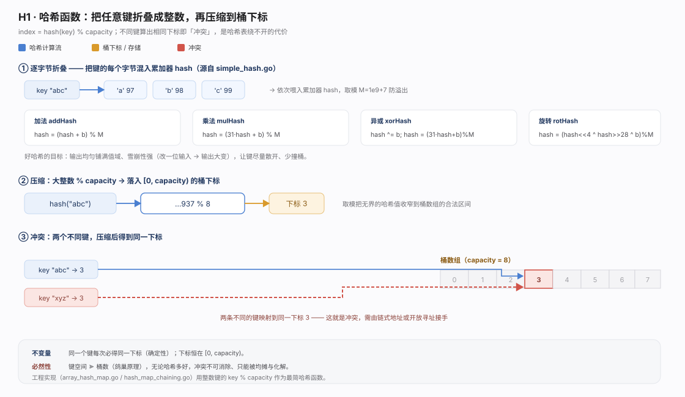
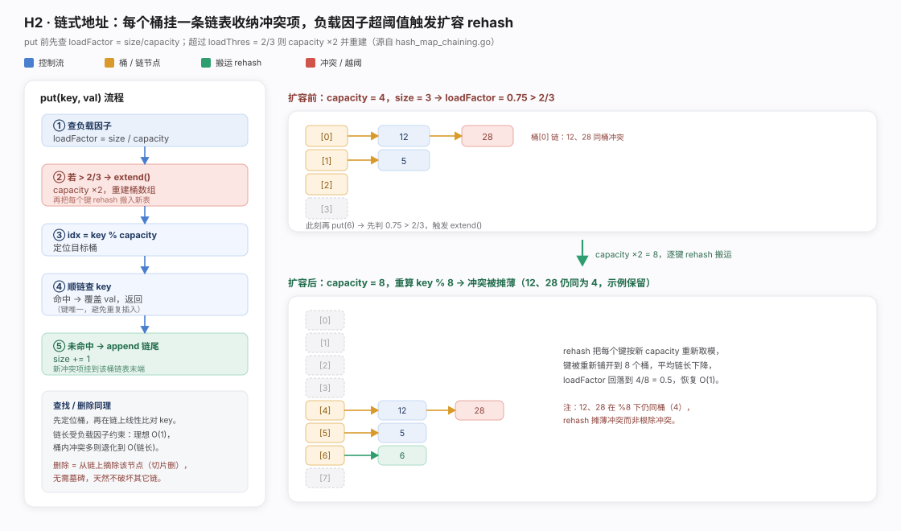
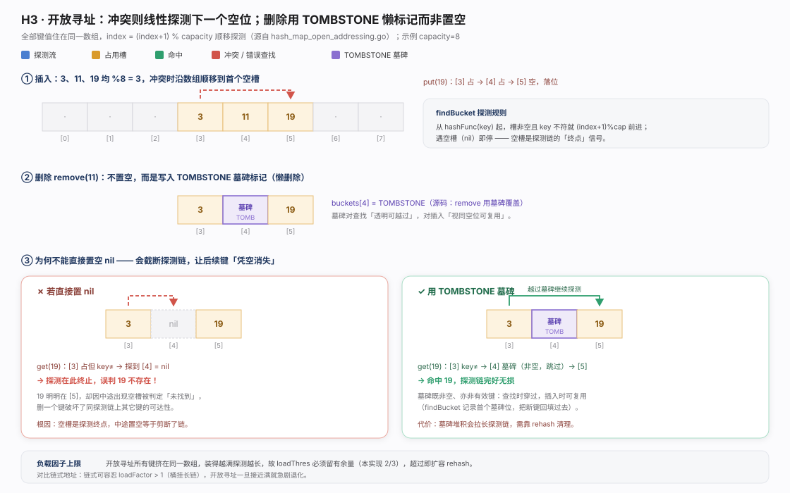
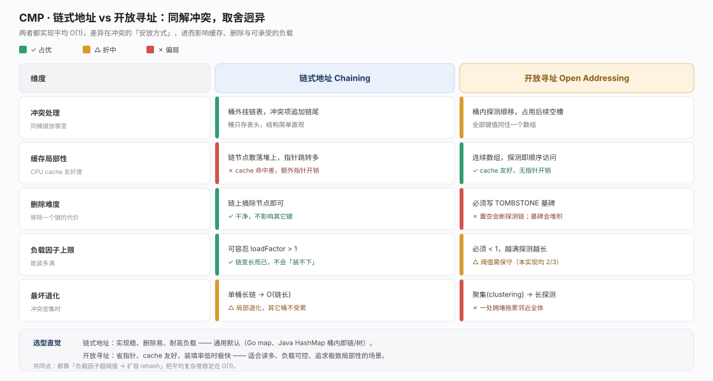

哈希表用哈希函数把键折叠成整数再取模得桶下标 index = hash(key) % capacity，把查找从「逐个比对」变为「一次计算 + 一次寻址」，增删查平均 O(1)。这是它区别于树（O(log n) 但有序）的根本取舍：用有序性与最坏情形保证，换平均常数级速度。
代价有二。其一是冲突：键空间远大于桶数（鸽巢原理），冲突不可消除只能化解——链式地址把冲突项挂桶外链表，开放寻址在同数组内顺移探测。其二是负载：桶越满 O(1) 越退化，故用负载因子 loadFactor = size / capacity 度量，超阈值（本实现 2/3）触发 extend() 容量翻倍并 rehash（单次 O(n)，均摊 O(1)）。三件事环环相扣：哈希函数决定散布均匀度、冲突策略决定撞上怎么办、负载因子与 rehash 决定何时扩容。

哈希函数干两件事：折叠（把键各字节混入累加器）与压缩（% capacity 收窄到桶区间）。simple_hash.go 给出加法、乘法（31·hash+b，Java 字符串哈希经典）、异或、旋转四种；乘法与旋转让位置参与运算，改一位输入即大幅变化（雪崩效应），散布更均匀、撞桶更少；累加中对大质数 1e9+7 取模只为防溢出。整数键实现直接用 key % capacity 演示原理。关键前提：只要键取值多于桶数，冲突必然存在——哈希函数只影响冲突频率，不能消除冲突，故必接冲突解决机制（见 H2/H3）。
package chapter_hashing
import "fmt"
/* 加法哈希 */
func addHash(key string) int {
var hash int64
var modulus int64
modulus = 1000000007
for _, b := range []byte(key) {
hash = (hash + int64(b)) % modulus
}
return int(hash)
}
/* 乘法哈希 */
func mulHash(key string) int {
var hash int64
var modulus int64
modulus = 1000000007
for _, b := range []byte(key) {
hash = (31*hash + int64(b)) % modulus
}
return int(hash)
}
/* 异或哈希 */
func xorHash(key string) int {
hash := 0
modulus := 1000000007
for _, b := range []byte(key) {
fmt.Println(int(b))
hash ^= int(b)
hash = (31*hash + int(b)) % modulus
}
return hash & modulus
}
/* 旋转哈希 */
func rotHash(key string) int {
var hash int64
var modulus int64
modulus = 1000000007
for _, b := range []byte(key) {
hash = ((hash << 4) ^ (hash >> 28) ^ int64(b)) % modulus
}
return int(hash)
}
链式地址：桶存链表头，哈希到该格的键追加到链尾，查找先定位桶再在短链上线性比对。两个易错点：其一扩容检查在插入之前（put 一进来算 loadFactor，超 2/3 先 extend() 再插入，保证插入后负载仍健康）；其二插入前先遍历查重（命中相同 key 覆盖 val，确认新键才 append 且 size++，维护键唯一）。extend() 因 hashFunc 依赖 capacity，容量变则须整体 rehash。链式对负载因子最宽容——loadFactor > 1 也只是链变长绝不装不下，删除仅摘链上节点不牵连他键，故成主流默认（Go map、Java HashMap）。
package chapter_hashing
import (
"fmt"
"strconv"
"strings"
)
/* 链式地址哈希表 */
type hashMapChaining struct {
size int // 键值对数量
capacity int // 哈希表容量
loadThres float64 // 触发扩容的负载因子阈值
extendRatio int // 扩容倍数
buckets [][]pair // 桶数组
}
/* 构造方法 */
func newHashMapChaining() *hashMapChaining {
buckets := make([][]pair, 4)
for i := 0; i < 4; i++ {
buckets[i] = make([]pair, 0)
}
return &hashMapChaining{
size: 0,
capacity: 4,
loadThres: 2.0 / 3.0,
extendRatio: 2,
buckets: buckets,
}
}
/* 哈希函数 */
func (m *hashMapChaining) hashFunc(key int) int {
return key % m.capacity
}
/* 负载因子 */
func (m *hashMapChaining) loadFactor() float64 {
return float64(m.size) / float64(m.capacity)
}
/* 查询操作 */
func (m *hashMapChaining) get(key int) string {
idx := m.hashFunc(key)
bucket := m.buckets[idx]
// 遍历桶，若找到 key ，则返回对应 val
for _, p := range bucket {
if p.key == key {
return p.val
}
}
// 若未找到 key ，则返回空字符串
return ""
}
/* 添加操作 */
func (m *hashMapChaining) put(key int, val string) {
// 当负载因子超过阈值时，执行扩容
if m.loadFactor() > m.loadThres {
m.extend()
}
idx := m.hashFunc(key)
// 遍历桶，若遇到指定 key ，则更新对应 val 并返回
for i := range m.buckets[idx] {
if m.buckets[idx][i].key == key {
m.buckets[idx][i].val = val
return
}
}
// 若无该 key ，则将键值对添加至尾部
p := pair{
key: key,
val: val,
}
m.buckets[idx] = append(m.buckets[idx], p)
m.size += 1
}
/* 删除操作 */
func (m *hashMapChaining) remove(key int) {
idx := m.hashFunc(key)
// 遍历桶，从中删除键值对
for i, p := range m.buckets[idx] {
if p.key == key {
// 切片删除
m.buckets[idx] = append(m.buckets[idx][:i], m.buckets[idx][i+1:]...)
m.size -= 1
break
}
}
}
/* 扩容哈希表 */
func (m *hashMapChaining) extend() {
// 暂存原哈希表
tmpBuckets := make([][]pair, len(m.buckets))
for i := 0; i < len(m.buckets); i++ {
tmpBuckets[i] = make([]pair, len(m.buckets[i]))
copy(tmpBuckets[i], m.buckets[i])
}
// 初始化扩容后的新哈希表
m.capacity *= m.extendRatio
m.buckets = make([][]pair, m.capacity)
for i := 0; i < m.capacity; i++ {
m.buckets[i] = make([]pair, 0)
}
m.size = 0
// 将键值对从原哈希表搬运至新哈希表
for _, bucket := range tmpBuckets {
for _, p := range bucket {
m.put(p.key, p.val)
}
}
}
/* 打印哈希表 */
func (m *hashMapChaining) print() {
var builder strings.Builder
for _, bucket := range m.buckets {
builder.WriteString("[")
for _, p := range bucket {
builder.WriteString(strconv.Itoa(p.key) + " -> " + p.val + " ")
}
builder.WriteString("]")
fmt.Println(builder.String())
builder.Reset()
}
}
开放寻址：所有键值对住同一数组，桶被占则沿探测序列顺移，本实现用线性探测 index = (index+1) % capacity 找空槽。回报是极佳缓存局部性（连续内存顺序访问、无指针跳转）。核心易错点:删除不能直接置 nil——空槽是探测链的终止信号，中间置空会使越过它落位的后续键「凭空消失」。解法是 TOMBSTONE 墓碑懒删除：对查找透明可越过、对插入视同空位可复用（findBucket 记录首个墓碑位回填并整理探测链）。代价是墓碑累积拉长探测链，终需 rehash 清扫；且负载因子必须严格小于 1，越满聚集越严重，故扩容阈值比链式更保守。
package chapter_hashing
import (
"fmt"
)
/* 开放寻址哈希表 */
type hashMapOpenAddressing struct {
size int // 键值对数量
capacity int // 哈希表容量
loadThres float64 // 触发扩容的负载因子阈值
extendRatio int // 扩容倍数
buckets []*pair // 桶数组
TOMBSTONE *pair // 删除标记
}
/* 构造方法 */
func newHashMapOpenAddressing() *hashMapOpenAddressing {
return &hashMapOpenAddressing{
size: 0,
capacity: 4,
loadThres: 2.0 / 3.0,
extendRatio: 2,
buckets: make([]*pair, 4),
TOMBSTONE: &pair{-1, "-1"},
}
}
/* 哈希函数 */
func (h *hashMapOpenAddressing) hashFunc(key int) int {
return key % h.capacity // 根据键计算哈希值
}
/* 负载因子 */
func (h *hashMapOpenAddressing) loadFactor() float64 {
return float64(h.size) / float64(h.capacity) // 计算当前负载因子
}
/* 搜索 key 对应的桶索引 */
func (h *hashMapOpenAddressing) findBucket(key int) int {
index := h.hashFunc(key) // 获取初始索引
firstTombstone := -1 // 记录遇到的第一个TOMBSTONE的位置
for h.buckets[index] != nil {
if h.buckets[index].key == key {
if firstTombstone != -1 {
// 若之前遇到了删除标记，则将键值对移动至该索引处
h.buckets[firstTombstone] = h.buckets[index]
h.buckets[index] = h.TOMBSTONE
return firstTombstone // 返回移动后的桶索引
}
return index // 返回找到的索引
}
if firstTombstone == -1 && h.buckets[index] == h.TOMBSTONE {
firstTombstone = index // 记录遇到的首个删除标记的位置
}
index = (index + 1) % h.capacity // 线性探测，越过尾部则返回头部
}
// 若 key 不存在，则返回添加点的索引
if firstTombstone != -1 {
return firstTombstone
}
return index
}
/* 查询操作 */
func (h *hashMapOpenAddressing) get(key int) string {
index := h.findBucket(key) // 搜索 key 对应的桶索引
if h.buckets[index] != nil && h.buckets[index] != h.TOMBSTONE {
return h.buckets[index].val // 若找到键值对，则返回对应 val
}
return "" // 若键值对不存在，则返回 ""
}
/* 添加操作 */
func (h *hashMapOpenAddressing) put(key int, val string) {
if h.loadFactor() > h.loadThres {
h.extend() // 当负载因子超过阈值时，执行扩容
}
index := h.findBucket(key) // 搜索 key 对应的桶索引
if h.buckets[index] == nil || h.buckets[index] == h.TOMBSTONE {
h.buckets[index] = &pair{key, val} // 若键值对不存在，则添加该键值对
h.size++
} else {
h.buckets[index].val = val // 若找到键值对，则覆盖 val
}
}
/* 删除操作 */
func (h *hashMapOpenAddressing) remove(key int) {
index := h.findBucket(key) // 搜索 key 对应的桶索引
if h.buckets[index] != nil && h.buckets[index] != h.TOMBSTONE {
h.buckets[index] = h.TOMBSTONE // 若找到键值对，则用删除标记覆盖它
h.size--
}
}
/* 扩容哈希表 */
func (h *hashMapOpenAddressing) extend() {
oldBuckets := h.buckets // 暂存原哈希表
h.capacity *= h.extendRatio // 更新容量
h.buckets = make([]*pair, h.capacity) // 初始化扩容后的新哈希表
h.size = 0 // 重置大小
// 将键值对从原哈希表搬运至新哈希表
for _, pair := range oldBuckets {
if pair != nil && pair != h.TOMBSTONE {
h.put(pair.key, pair.val)
}
}
}
/* 打印哈希表 */
func (h *hashMapOpenAddressing) print() {
for _, pair := range h.buckets {
if pair == nil {
fmt.Println("nil")
} else if pair == h.TOMBSTONE {
fmt.Println("TOMBSTONE")
} else {
fmt.Printf("%d -> %s\n", pair.key, pair.val)
}
}
}
两条路线的差异全源于冲突项放桶外还是桶内：链式放桶外——删除干净、耐高负载，但链节点散落堆上、指针跳转多、缓存不友好；开放放桶内——缓存极佳、省指针，但删除靠墓碑、负载因子须留余量、一处拥堵拖累邻近全体。选型：要稳、好删、扛高负载选链式（通用默认）；要极致读性能与内存局部性且负载可控选开放寻址。二者共享救命稻草——超阈值就扩容 rehash 把平均复杂度拉回 O(1)。详见对比图。
- hello-algo《Hello 算法》第 6 章「哈希表」（array_hash_map.go / hash_map_chaining.go / hash_map_open_addressing.go / simple_hash.go 的原始出处与配套讲解）。 - Cormen, Leiserson, Rivest, Stein.《算法导论》(CLRS) 第 11 章 Hash Tables：全域哈希、链式地址（11.2）、开放寻址与探测序列（11.4）、负载因子分析。 - Knuth, D. E. *The Art of Computer Programming, Vol. 3: Sorting and Searching*, §6.4 Hashing：开放寻址、线性探测的聚集分析。 - The Go Programming Language — runtime/map.go 源码注释（生产级哈希表的桶、溢出桶与增量扩容实现）。 - Oracle. *Java Platform SE — java.util.HashMap* 官方文档（负载因子默认 0.75、桶内链表转红黑树的阈值设计）。